Breast History, Exam,
Investigation and Screening
HISTORY
Lump
How long, where, etc.
Pain?
Any other lumps in the axillae or elsewhere?
Change in appearance of the breast?
Associated with menstrual cycle?
Age
Ca is rare in young pts, common in pts >70 yrs.
Current age is major risk factor.
- a 50yr F has a 1:50 10-year risk.
Pregnancies
How many children?
Age of first birth?
Breast fed? For how long?
Recent pregnancy or lactation important.
Menstrual Pattern
Regularity, duration, quantity of bleeding.
Symptoms associated with cycling are usually benign.
Medication
OCP reduces cycling.
HRT extends age for benign conditions like cysts.
Long-term use of both associated with breast cancer.
Alcohol consumption?
Family history
Of breast disease, what age were they affected?
(BRCA declares itself before 40)
- also ask about ovarian cancer history.
Nipple discharges
Red / serous =
duct papilloma, carcinoma, ectasia
Brown, green, black = duct ectasia, cysts.
Pus = ectasia.
Past history
Previous operations / biopsies / other procedures.
Hysterectomy may obscure menopause.
Other points to note if Ca
suspected:
- constitutional symptoms
- weight loss (rare in breast cancer)
- respiratory changes
- swelling of the arm
- back pain, pathological fractures.
- cerebral mets: headaches etc.
INSPECTION
Postioning
Fully expose to waste.
Body at 45o.
- many begin with pt sitting upright for inspection.
Inspect for:
Size, symmetry (recent change concerning)
Skin (tumour, puckering, veins, dimpling, ulceration).
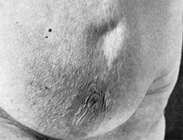
- peau d'orange / oedema:
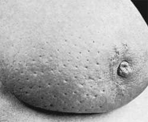
Nipples (retraction, inversion, ulceration, Paget's, discharge,
areolar colour).
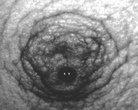
- in Pagets, Ca cells invade through duct across epithelium:
- Pagets begins at nipple
cf eczema which begins at areola.

- unilateral or bilateral?
- look for supranumery nipples or ectopic breast tissue (latter
usually in axilla):
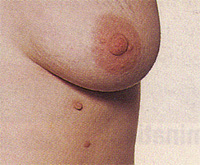
Colour
Erythema
- fixed tumours give a smooth red appearance, becoming pale when
ulceration is imminent
Inflammation (inflammatory carcinoma).
- almost always inflammation is associated with oedema
- such may be the only sign of cancer.
Movements
Slowly raise arms above head, hands on hips squeeze hips (brings out
pecs).
- these can accentuate dimpling etc.
Other areas to inspect
Look at arms, axillae, supraclavicular fossae.
PALPATION
Breast
Lie patient supine, hand under head, solid examining surface
beneath.
Use flat of fingers on breast, examine normal side first.
4 quadrants (or circle around), nipple area, axillary tail.
- half of all cancers are located in UOQ including tail.
Attempt to express discharge if the history suggests.
- by gently pressing the areola around the nipple base and
observing.
Nipple inversion that is easily reversed is not pathological.
Axilla
Sit patient up and "shake hands" at the elbow, allowing you to
position their arm relaxedly.
- many do this prior to lying patient down to palpate breast.
Feel front, back, medial, lateral and superior.
Usually hard and discrete if involved in Ca, may become tethered,
ulceration is rare.
Supraclavicular
Don't
forget
the other lymph node basin.
Other Breast
May contain a met or a second primary.
Ask the patient
If you haven't found the lump, ask the pt to show you where it is.
Still not found = believe the pt anyway.
What should I screen in an
asymptomatic female?
Examine both breasts, axillae, supraclavicular fossae.
I am suspicious of advanced
cancer.
Arms - check for swelling / lymphovascular integrity.
Spine - palpate, perform spinal movements.
Lungs - ?pleural effusion, diffuse involvement.
Liver - ?palpable, ?jaundice.
Skin - hard nodules?
Brain - if neuro symptoms.
LUMP FOUND
Describe lump
Site, size, shape etc as for any lump.
- cancers are any shape, though often spherical to begin with.
- some cancers may be smooth like cysts and fibroadenomas.
- they are usually solid, non fluctuant, without thrill or
transillumination, though some are soft so hardness is not reliable.
- only rare inflammatory cancers are warm.
- most are non-tender.
Remember tethering vs fixation:
- a lump should be freely mobile w/out affecting skin.
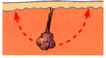
- if a lump indents the skin when moved widely it is tethered.
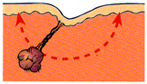
- if it cannot be moved without moving the skin it is fixed.
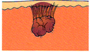
(If tethered, invading Cooper's Ligs, if fixed, invading skin).
Examine for other lumps
It is not unusual to find two separate primaries.
Examine for mets
Palpate abdomen for hepatomegaly and ascites.
Examine lumbar spine for pain / restriction.
Consider brain and chest.
TNM staging
T1 = 2cm diameter or less; no tethering or fixing
T2 = 2-5cm (or <2cm with tethering / nipple retraction)
T3 = 5-10cm (or less than 5cm with infiltration, ulceration or peau
d'orange or deep fixation)
T4 = >10cm or any tumour with infiltration or ulceration wider
than its diameter.
N0 = No nodes
N1 = Mobile palpable axillary nodes
N2 = Fixed axillary nodes
N3 = Palpable supraclavicular nodes / Oedema of arm.
M0 = No mets
M1 = Distant mets
BREAST
INVESTIGATIONS
Triple assessment
1. Clinical history & examination
2. Mammography / USS
3. FNA
- postpone needles if mammogram thought necessary
- a small haematoma might confuse the radiologist.
Imaging
Diagnostic Mammography
Most sensitive and specific test available.
- however 10-15% of clinically evident breast Ca has no mammographic
correlate
Includes magnifications and compression views in addition to MLO
(mediolateral-oblique) and CC (craniocaudal).
Features of malignancy
Density abnormalities (mass, distortion, asymmetry)
Microcalcification.
Skin thickening and retraction
Axillary densities.
BI-RADS Lesion Classification
American College of Radiology reporting consensus:
0 = inadequate study
1 = negative, screen at 1 yr
2 = benign findings, screen at 1 yr
3 = probably benign, short term follow up
4 = suspicious, biopsy.
5 = highly suspect, take appropriate action.
Has a +ve predictive value of Ca of :
- 2.55% for cat. 3
- 29.7% for cat. 4
- 93.9% for cat. 5
Evaluating a non-palpable
mammographic lesion
i) Hook-wire localisation biopsy
ii) Or image-guided core biopsy
Spiculated lesion:
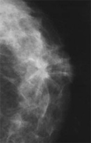
Clustered microcalcifications:
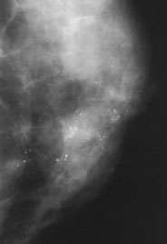
Ultrasound
Not a screening tool.
Useful in directed evaluation of a breast mass: solid or cystic.
Suspicious:
- internal echoes
- solid mass
- irregular border
- most taller than wide
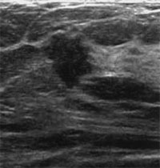
Cyst:
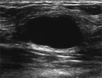
MRI
Efficacy for screening unproven.
- invasive Ca detection approaches 100%
- cf only 60% at best for DCIS.
- specificity is, however, low, overlap in appearance between benign
& malignancy.
Best test to evaluate implant rupture.
May be useful in pts with malignant axillary adenopathy for
detecting the occult breast primary.
FNA
22g needle usual.
Fix immediately on slides with ethyl alcohol.
Core Biopsy
Often achieved via mammogram (stereotactic) or USS guidance
- core then mammogram'd to check if calcification inside.
65% women undergoing this in an experienced centre show benign
results.
- 25% Ca, 10% indeterminate / discordant / inadequate
I have found atypia on core
biopsy.
- WLE biopsy required.
- 13% will have DCIS, 6% invasive cancer.
- if atypical lobular hyperplasia, excision biopsy not mandated:
worst case scenario = LCIS.
References
Browse 4th.
Sabiston 17th